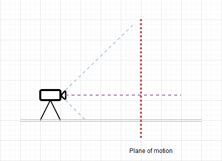

Guidelines to minimize errors¶
The following guidelines are designed to minimize the systematic and random errors inherent to measuring spatial motion on 2D images.
Camera setup¶
Mount the camera on a tripod and avoid camera motion¶
The camera must remain stationary for the images to provide a stable frame of reference. If the camera is moving relative to the scene, the plane of motion will change over time and the calibration from one video frame cannot be used on other frames.
Tip
If you do not control the camera and it is moving, you can try to track the calibration object itself.
Align the camera plane with the plane of motion¶
When using calibration by line the camera must be aligned with the plane of motion, the camera optical axis must be orthogonal to the plane of motion.
Tip
If the camera is not in a controlled environment use the calibration by plane.
Maximize the camera distance to the scene¶
To minimize perspective distortion. place the camera as far as possible from the scene and zoom in. This will reduce errors due to points moving in and out of the plane of motion.
Camera and digitization¶
Minimize or correct lens distortion¶
Use a lens with as little distortion as possible to minimize the curvature of the plane of motion in the images.
This distortion can be taken into account in MotionON using the lens calibration dialog.
See also: Lens distortion calibration.
Use an appropriate exposure time¶
To minimize motion blur, decrease the exposure time as much as possible (increase shutter speed).
Maximize image size and image quality¶
Use the largest possible image resolution to improve the precision of the digitization process when locating points on the images.
Use the zoom function¶
Use the zoom function in MotionON to position the points more precisely. MotionON uses fractional pixel coordinates for calibration and measurements.
Scene setup¶
Use a large reference object¶
The scaling object used for calibration should occupy as much of the image as possible.
Use a vertical or horizontal reference¶
To align the axes of the coordinate system with the real world use a plumb line or other object of known direction as the calibration object. If the real world vertical line is not parallel to the image side you can set the calibration line to define the vertical axis.
Avoid measuring objects outside the plane of motion¶
Everything that is measured must sit on the calibrated plane of motion. Coordinates and measurements using points physically outside the plane of motion will be inaccurate.
Use small round markers¶
Use small markers on the object or joints. The markers shape should not vary when rotated, for example a disk or concentric disks should be suitable.